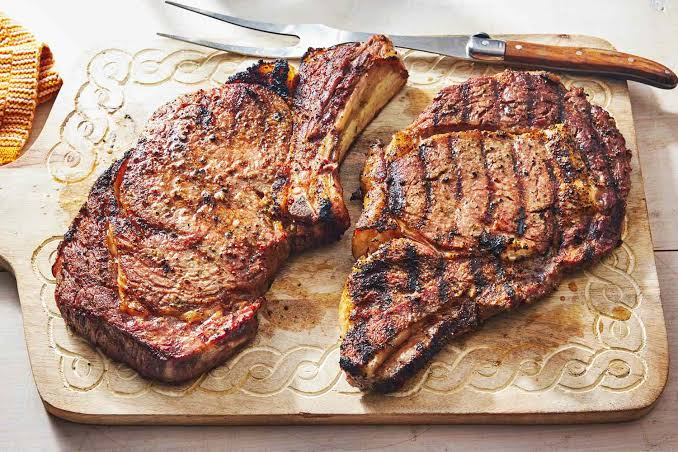

Marinated Flank Steak

Description
Flank steak is a lean cut of beef that comes from the cow's lower abdominal muscles.
It's a relatively tough cut that's low in fat, which means a few things: Flank steak doesn't need to be trimmed,
it's inexpensive compared to other cuts, and it benefits greatly from marination.
Flank and skirt steaks are similar in a lot of ways, but they do have notable differences.
Skirt steak comes from the diaphragm of the cow, while flank steak comes from the lower abdomen.
Also, skirt steak is fattier and has more marbling than flank steak. Flank steak is thicker and wider.
Ingredients
- 1 (1.5 pound) flank steak
- 1/2 cup of vegetable oil
- 1/3 cup low-sodium soy sauce
- 1/4 cup re wine vinegar
- 2 tablespoons Worcestershire sauce
- 1 tablespoon Dijon mustard
- 2 cloves garlic, minced
- 1/2 teaspoon ground black pepper
Steps
- Gather all ingredients.
- Whisk together oil, soy sauce, vinegar, lemon juice, Worcestershire sauce, Dijon mustard, garlic, and
pepper for marinade until thoroughly combined. Place steak in a 9x13-inch glass baking dish.
- Pour marinade over flank steak in the baking dish; turn several times to coat thoroughly with marinade.
Cover, and refrigerate for 2 to 6 hours, or up to 12 hours if you have time.
- When ready to cook, preheat an outdoor grill for medium-high heat and lightly oil the grate.
- Remove steak from the marinade and shake off excess. Discard the remaining marinade.
- Cook steak on the preheated grill for about 5 minutes per side, or to desired doneness.
- Remove from the grill and let rest for 5 minutes before slicing and serving.
- Serve hot and enjoy!
Back